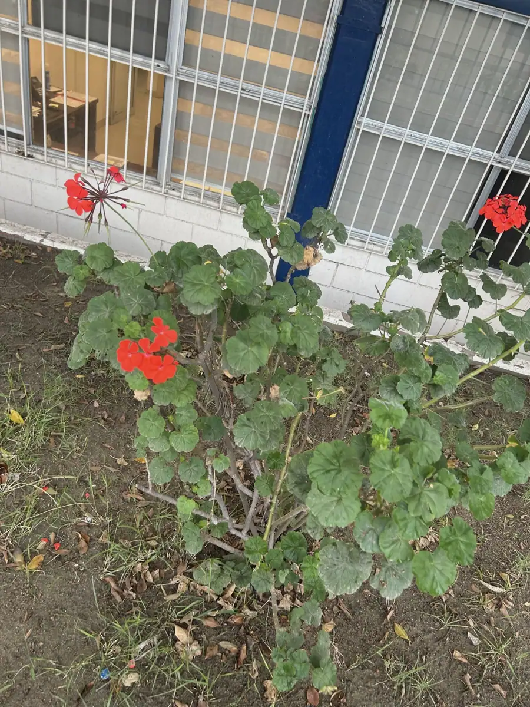
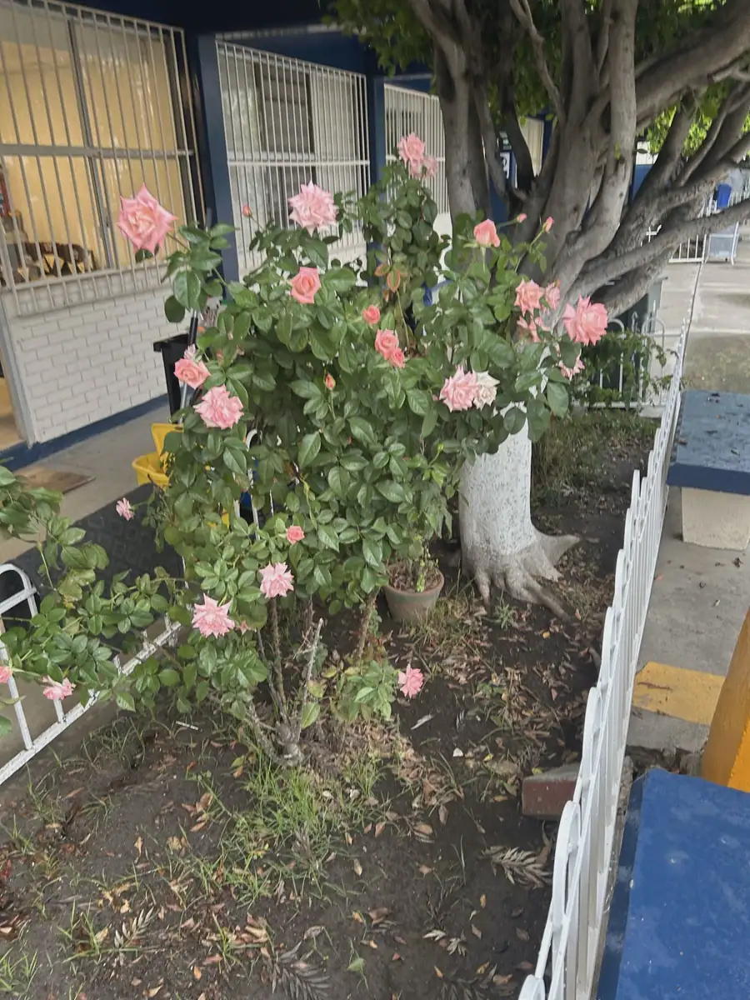
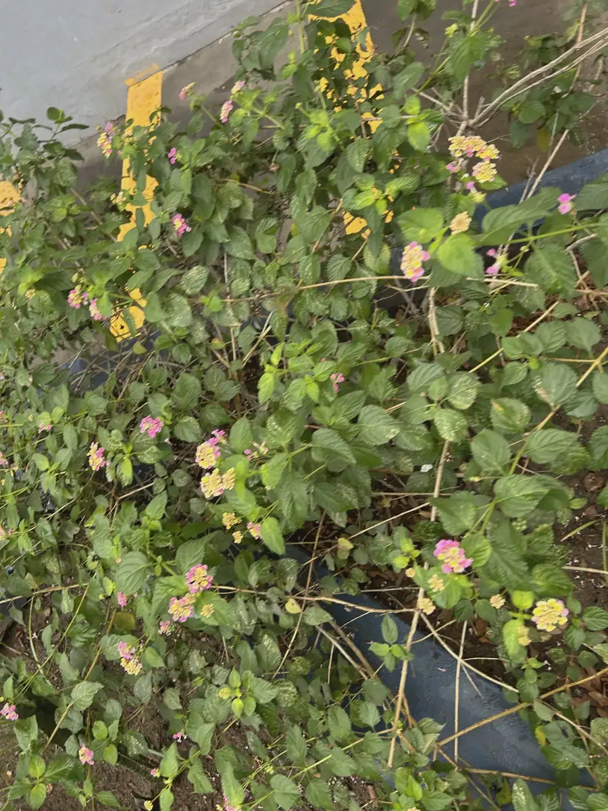
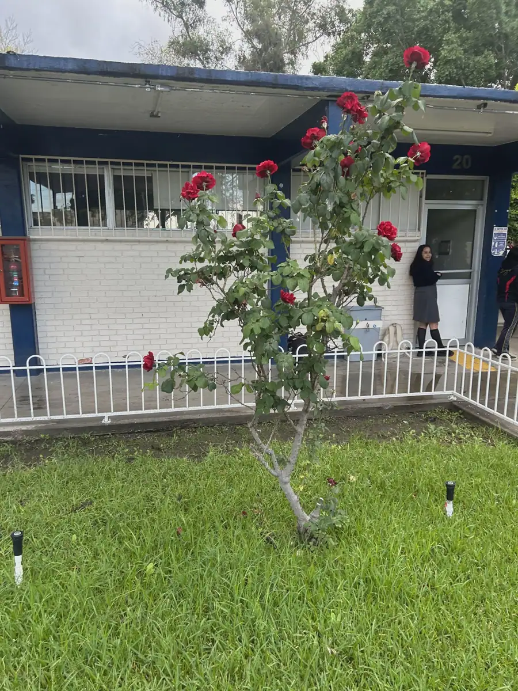
Por qué existe
10%
de las especies del planeta viven en México. Casi nadie se detiene a mirarlas.
Ceguera vegetal
Así se llama el hábito de pasar junto a las plantas sin verlas: se vuelven fondo, y lo que no se ve no se cuida.
EcoPlantNet GO responde con una app de visión artificial y gamificación. Apuntas el celular a una planta, el juego la reconoce y la naturaleza de tu escuela se vuelve una colección que quieres completar.
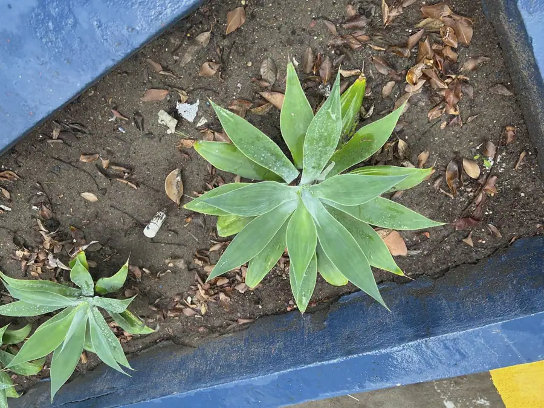
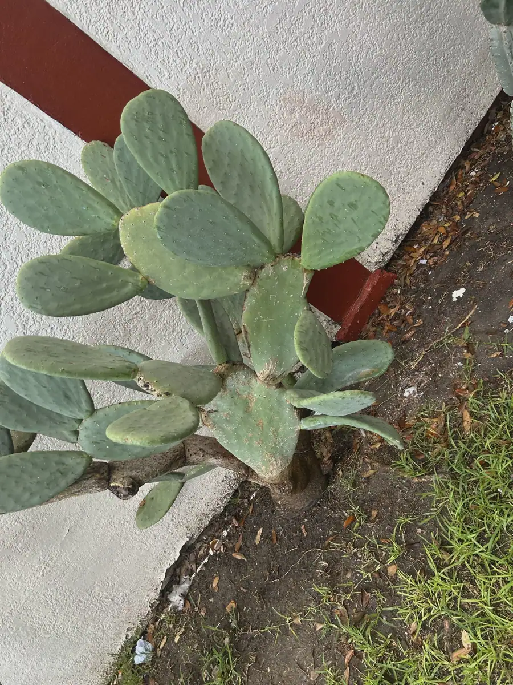
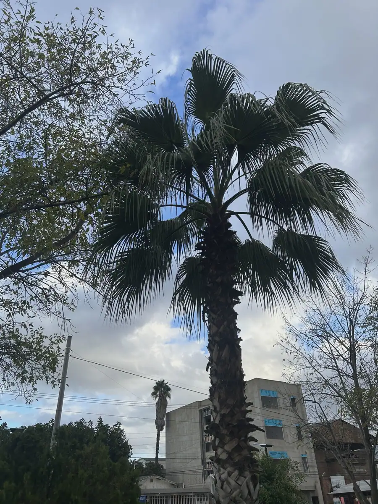
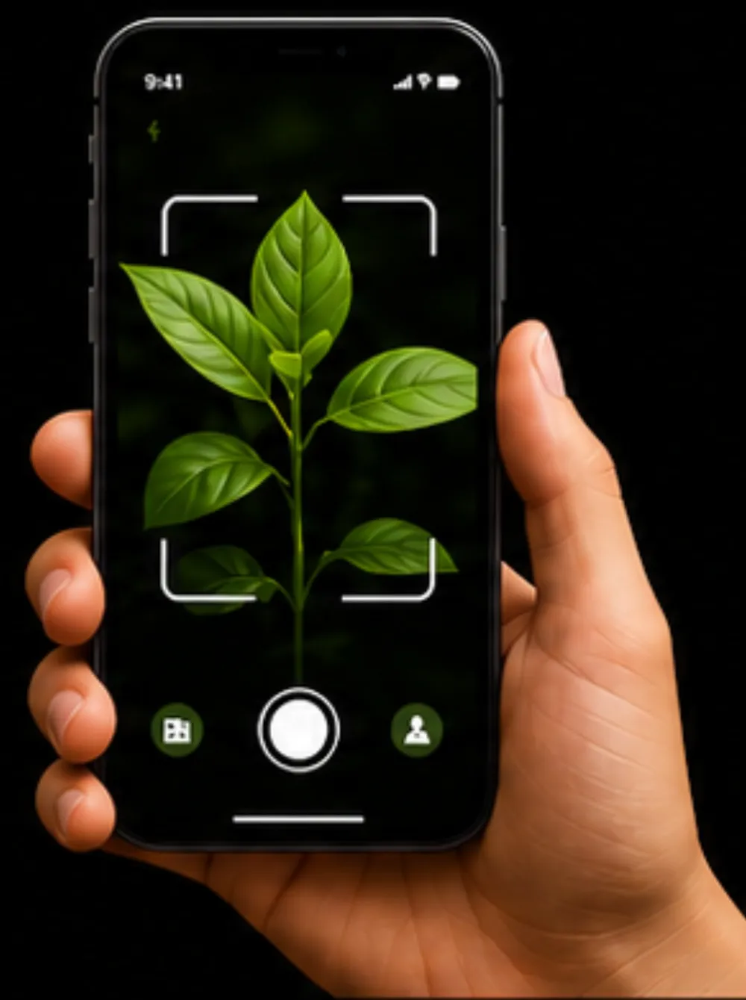
Cómo funciona
Cuatro pasos,
una colección
El herbario
del plantel
31 especies fotografiadas por el equipo en los jardines del CBTIS 116. Abre una para ver todas sus fotos y regístrala en tu colección.
Compañeros 3D
Cada planta
tiene su personaje
Ocho compañeros acompañan tu recorrido. Elige uno y gíralo: arrástralo o usa las flechas del teclado.
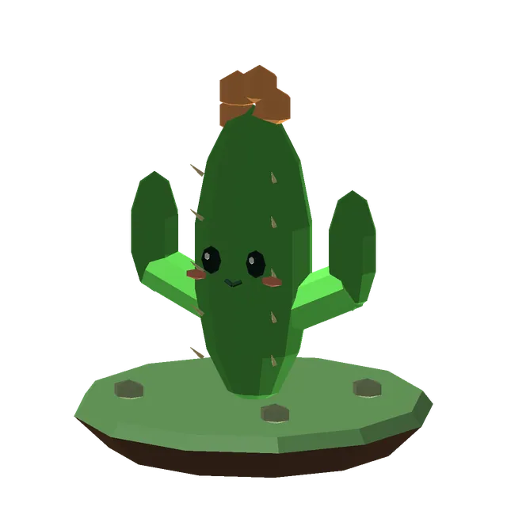
Espinitoel nopal
Minijuegos
Juega
y aprende
- PlantBallPartidas rápidas con tus plantas como protagonistas.
- PlantBasketReflejos y puntería para sumar puntos entre exploraciones.
- Batallas de plantasDuelos de trivia botánica contra otros exploradores.
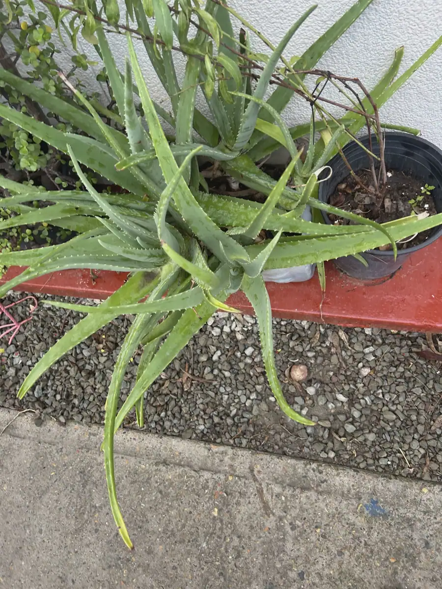
¿Qué planta del plantel se usa para calmar quemaduras?
Impacto esperado
Lo que
queremos lograr
- 01Mayor conciencia ambiental en más personas.
- 02Aprendizaje divertido, interactivo y significativo.
- 03Participación activa en acciones de conservación reales.
- 04Mejora en la educación ecológica de estudiantes de México.
- 05Fortalecimiento del vínculo entre las personas y la naturaleza.
Objetivos
específicos
- 1Analizar el conocimiento de las personas sobre biodiversidad.
- 2Determinar si están dispuestas a probar métodos de aprendizaje didácticos.
- 3Diseñar un videojuego educativo que fomente la conciencia y la conservación.
- 4Implementar la colección en entornos educativos para desarrollar habilidades y conocimientos.
- 5Evaluar el impacto de la app en el aprendizaje de biodiversidad, flora, fauna y cuidados.
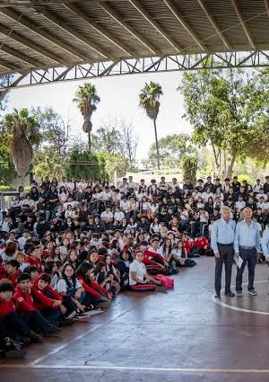
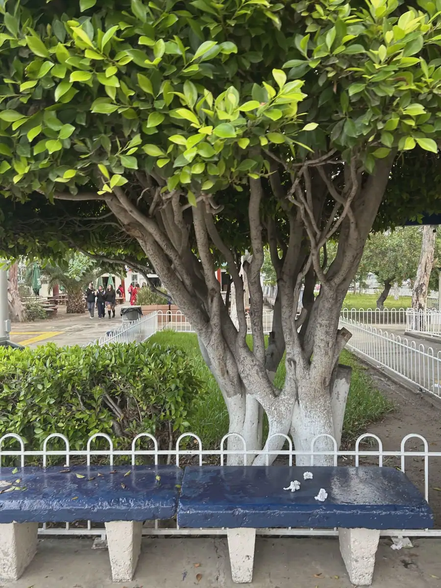
Hecho en el CBTIS 116
Centro de Bachillerato Tecnológico Industrial y de Servicios No. 116 “General Vicente Guerrero”, en Tijuana, Baja California.
Cada especie del herbario crece en sus jardines, pasillos y jardineras: el juego empieza en cuanto sales del salón.
El equipo
- Gustavo Lagunes Rivera
- Diego Alexander Zavala Zamorano
- Isaías Aguilar Pedraza
- Ángel Mauricio Cruz Flores
Explore · Append · Protect
Sal a buscar
tu primera planta
Abre el herbario, elige una especie que ya hayas visto en el plantel y regístrala. Tu colección se guarda en este dispositivo.
Empieza tu colección